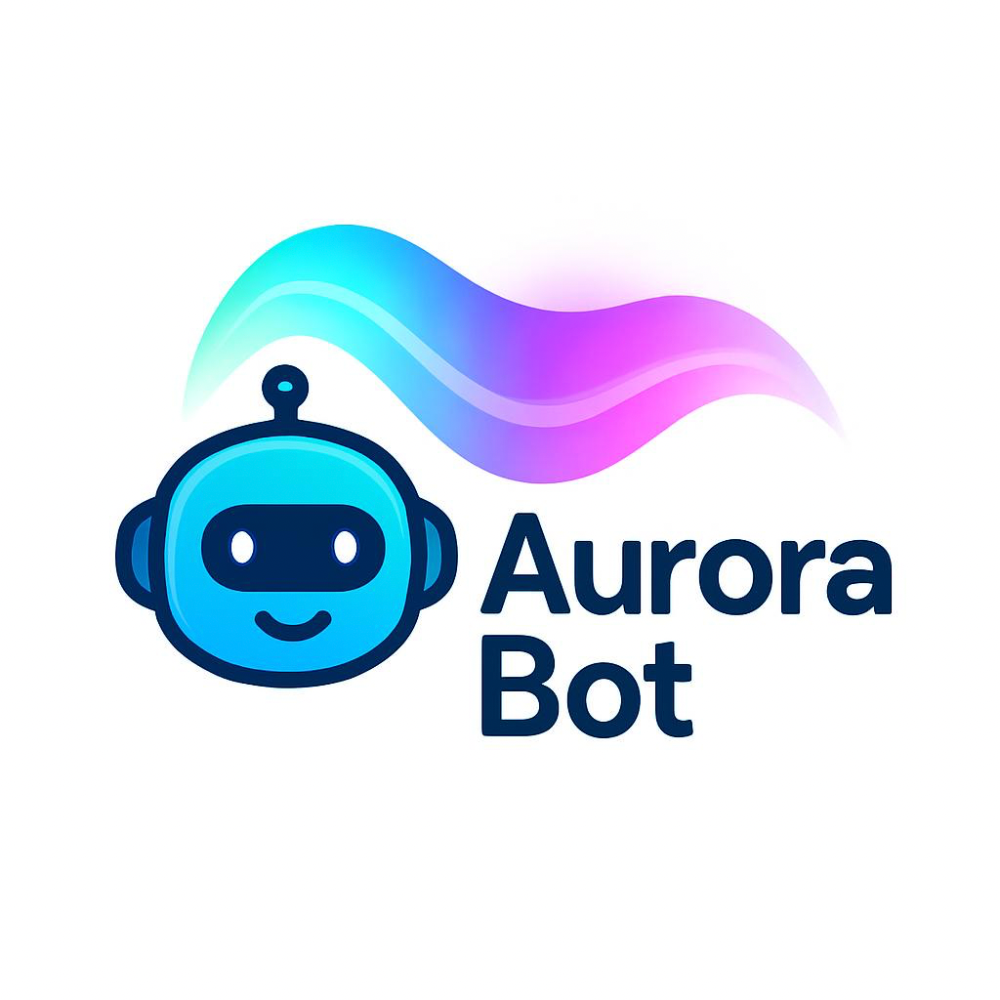

AuroraBot Information Page
AuroraBot is a project that I have been working on for a few months. Previous to this iteration, it was a private notification service.
Now AuroraBot can be found on Mastodon at AuroraBot@crosstalk.tech.
AuroraBot posts every 20 minutes with the latest K-index data.
🤖 About AuroraBot
User-Agent String
AuroraBot uses the User-Agent string of AuroraBot/1.0 https://aurorabot.tmbarrett.com
Robots.txt
We do honor robots.txt, if one is available. It will attempt to connect and if one is not available, or we get a 404 Not Found, we will assume we are good to go.
- This bot checks for the AuroraBot
- If we receive a 404/Not Found while retrieving a robots.txt, we will assume it doesn't exist and process data as normal.
- If we see that we are disallowed by robots.txt, the bot will cease and notify its admin for further handling.
😇 Ethical Guidelines & Safety
- This bot does not engage in conversations.
- This bot does not follow users automatically.
- This bot does not scrape private data.
- This bot respects robots.txt
- This bot avoids posting harmful or misleading content.
- This bot is not trained on user content.
- Because this bot is not AI/ML.
- This bot is a simple grab, process, and post.
📦 Design Choices
- Written in Python 🐍
- Runs in a Docker Container 📦
- Triggered by cron every 20 minutes ⏰
- Uses Mastodon API for posting 📲
- Uses requests for fetching data. 📊
🔧 Technical Details
Libraries Used
👨💻 Project code is available on GitHub at https://github.com/trbarrettjr/
🧪 Development Philosophy
I built this tool to share some of my passion with the world! I really do enjoy being outdoors especially when there is an Aurora Borealis.
🎧 Music Listened to while in Development
I have been in the Phantom of the Opera kick right now. So it has been the cast recording of Andrew Lloyd Webber's Phantom of the Opera.